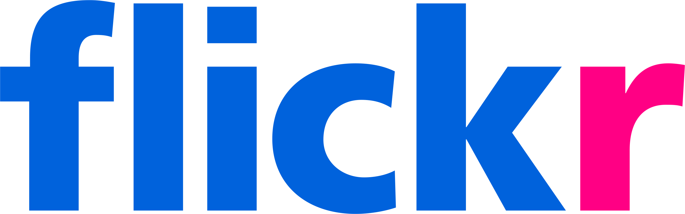

Navaneeth Ashok


About Me
Experienced Automation and Quality Assurance Engineer with a demonstrated history of working in the computer and network security industry. Skilled in Python, Perl, C++, OpenCV, and Test Automation. Strong software engineering professional with a Bachelor of Technology (B.Tech.) focused in Computer Science Engineering from Amrita School of Engineering, India.
Website Experience
My website building experiance is fairly limited, as I was working as an automation engineer tasked to create automation frameworks for the QA teams. As part of my job, I have worked on a lot on webpage editing and manipulation for automation purposes. I have very good experiance on Python requests modules and has created bots based on the same as well. I am a hobbyist photographer, and I upload the photos taken by me in  and .
My Top 5 Favorite Websites
My Favorite Movies
| Title | Year Released | Director | Genre | Favorite Character(or Actor) | |
|---|---|---|---|---|---|
| 1 | The Lunchbox | 2013 | Ritesh Batra | Drama | Irrfan Khan |
| 2 | The Matrix | 1999 | Wachowski Brothers | Sci-Fi | Neo |
| 3 | Interstellar | 2014 | Christopher Nolan | Sci-Fi | TARS |
| 4 | Watchmen | 2009 | Zack Snyder | Action | Rorschach |
| 5 | The Terminator | 1984 | James Cameron | Action | Kyle Reese |